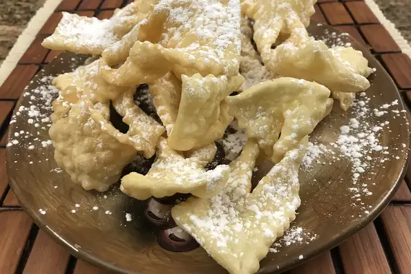

Kruschicki Recipe

Description
This recipe is from my grandmother: the secret is to roll the dough thin for a light, crisp cookie. Polish bow tie cookies.
Ingredients
6 egg yolks
1/2 pint sour cream
3 tablespoons white sugar
1 tablespoon vanilla extract
1 tablespoon whiskey
3 cups all-purpose flour
1 cup vegetable oil for frying
1/3 cup confections' sugar for decoration
Directions
Heat oil in deep-fryer to 375 degrees F (190 degrees C).
- In a large bowl, beat together the egg yolks, sour cream, white sugar, vanilla and whiskey until smooth. Stir in flour until dough is stiff enough to knead. Turn out onto a floured surface and knead until smooth. Knead in additional flour if necessary. Divide dough into 3 or 4 pieces and roll each ball on floured surface. Cut into strips about 3 inches long then make a slit long ways down the middle. Pull one of the ends through like a bow.
- Place into hot oil and deep fry until golden brown. Let drain on paper towels and sprinkle with confectioners' sugar.